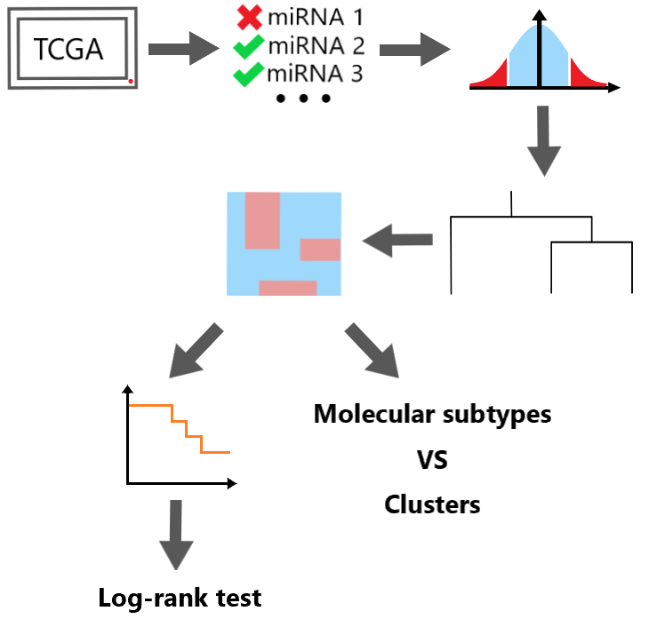

Methods
-
Import patient clinical and miRNA expression data from the TCGA database to a Python dataframe
-
Filter out outliers and data points with statistically low variability
-
Normalize values in the filtered dataset
-
Unsupervised hierarchical clustering to generate a dendrogram
-
Visualize clusters by generating a heatmap
-
Chi-squared test to compare molecular subtypes with clusters
-
Perform survival analysis on clusters

Code
import glob
import pandas as pd
import numpy as np
import matplotlib.pyplot as plt
%matplotlib inline
import seaborn as sns
# import case UUIDs
def case_id_import(filepath):
file = filepath
result = []
readfile = pd.read_json(file)
readfile = readfile['associated_entities']
result.append(readfile)
data_frame = pd.concat(result)
case_UUID = [d[0]['case_id'] for d in data_frame]
case_uuid = []
for uid in case_UUID:
case_uuid.append(uid.upper())
case_uuid
case_id_import(#filepath here)